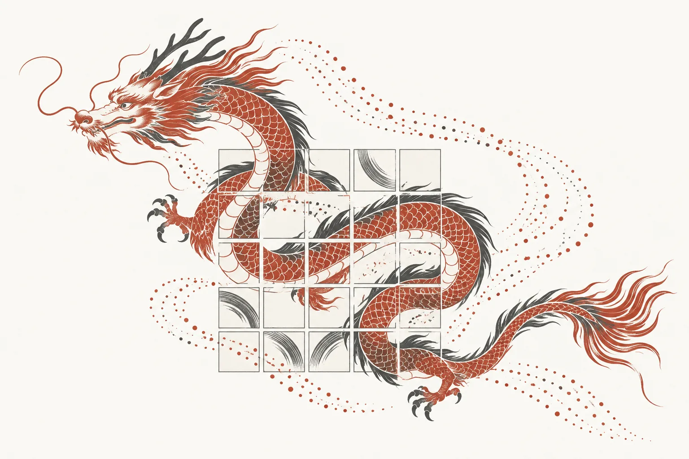

Dragon 杂凑家族NGCC Round-1 杂凑候选 hash-07 · symmetric（permutation-based）
NGCC Round 1
hash-07
自测向量 6/6 通过
暂无公开漏洞发现*

作者 — Meiqin Wang, Kai Hu, Zhuolong Zhang, Yong Fu, Yanhong Fan, Lixuan Wu, Shiyao Chen, Jiamin Cui, Zhongfeng Niu, Qun Liu, Chenhao Jia, Longzheng Cui （山东大学 · 南洋理工大学）。
太长不看：Dragon = 16 轮 ARX 置换 Dragon-p + sponge-forward 前馈模式，六个实例（512/768/1024 + 三个 XOF）。软件上全家族在全部测试长度快于 SHA3-512（Dragon-512 长消息约 2.6×）；硬件第一版综合频率受限（251–258 MHz），吞吐暂低于 SHA3-512。安全目标最高 512-bit collision / 1024-bit preimage。
Dragon 的核心是 sponge-forward 模式：sponge 的 capacity（inner）部分在每次置换前被保存、置换后 XOR 回去，把 (second-)preimage 安全性从经典的 c/2 提升到约 min{c, h}（ideal-permutation 模型下），因此 1600-bit 状态即可支撑 1024-bit preimage 目标。置换 Dragon-p 是 5×5×64 lane 上的 16 轮 ARX。
动态
- 2026-10-31 — 全部性能数字对照提交 spec 的 LaTeX 源逐格核验；站点改为双语双页并新增术语表。
- 2026-10-30 — 研究页面创建；全部材料镜像入仓库。
速览
| 条目 | 内容 |
|---|---|
| 模式 (mode) | sponge-forward Sponge-F^{P,pd10*}（Guo, Hu, Jiang, Fan, Fu, Preneel, Wang — ePrint 2025/1006，发表于 CRYPTO 2026）— capacity 部分每次置换后前馈回加 |
| 置换 | Dragon-p：5×5×64 lane（1600-bit 状态）上的 16 轮 ARX；rotations (1, 10, 24, 33, 49) |
| 实例 | Dragon-512 / -768 / -1024（定长 hash）与 Dragon-XOF-256 / -384 / -512（XOF） |
| 安全目标 | collision 256/384/512 bit、preimage 512/768/1024 bit（定长实例）；XOF generic 等级 log₂Q = 256/384/512 |
| 自测向量（KAT） | 6/6 实例通过提交的 KAT 向量（ngcc.dev harness） |
| 实现核对 | 未发现与规范的偏差（ngcc.dev 源码审查） |
| 速度（本组自评估） | 长消息比 SHA3-512 快约 2.6×（x86-64：4.87 vs 12.46 cpb）、约 3.5×（ARM：4.47 vs 15.49）；Dragon-512 在全部测试长度快于 SHA3-512 与 SM3（spec §5.1） |
页面导航
- 想快速了解算法 → 规范（参数表、模式与置换、轮常数）
- 想自己跑代码 → 实现（依赖 + 两条命令，几分钟跑通 KAT）
- 想看性能数字 → 性能（本组自评估 + 硬件表）
- 想跟进安全性 → 分析（第三方状态、constant-time、本组结果）
- 术语不熟 → 术语表
- 规范 PDF：
hash-07-spec.pdf（42 页，英文）· 完整算法笔记：pseudocode.md - NICCS 官方提交页 ·
提交包
Dragon.zip（见 fetch-archives.sh，148,150,104 字节） - ngcc.dev：security 报告 ·
constant-time 审查 ·
x86_1 /
arm_1 性能
（本地副本在
../ngcc-site/）
* “暂无公开漏洞发现”是 ngcc.dev 公开 finding 清单的当前状态（2026-10-28 快照）， 不构成安全性背书；该候选仍在评审中。